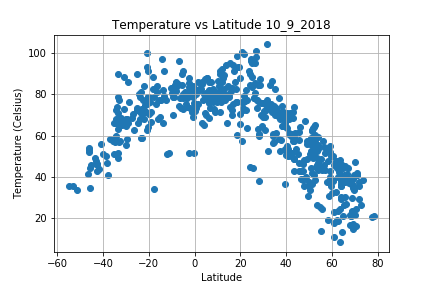
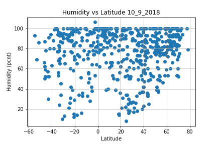
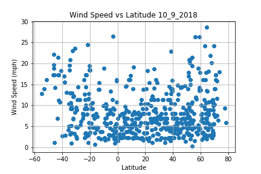
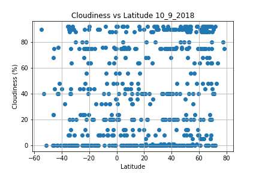
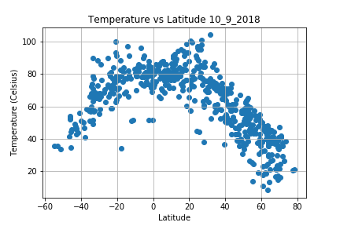
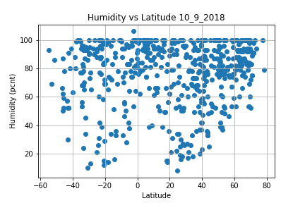
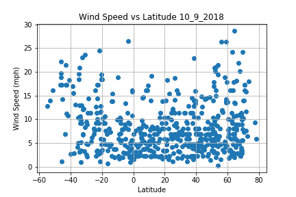
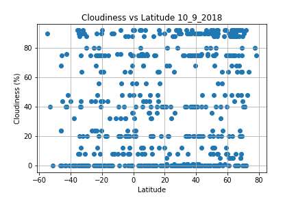

Summary: Lattitude vs X
Summary: Lattitude vs X

Abstract: The following api data was collected and analyzed for the purposes of this body of work. Openweathermap raw data was collected using api methodologies and results evaluated by temperature, humidity, cloudiness, and windspeed charted against latitudes. The data was collected using api access to gather relevant data from 606 cities worldwide on 10/9/2018. Citipy was used to randomly generate the sample of cities based on latitude and longitude for this data set. A list compression loop was used to collect the data with a 1 second per loop throttle to prevent oversampling issues with the vendor. The data was parsed using json methods and cast into lists and then assembled into a dataframe. Plots were constructed from the dataframe sample to analyze results. Observations based on this series of scatter plots to showcase the following relationships. Units are imperial in this dataset (Fahrenheit, humidity %, windspeed in mph ,% cloudiness).
Visualizations
Temperature

Humidity

Wind Speed

Cloudiness

* data from over 600 cities
Temperature
Humidity
Wind Speed
Cloudiness

* data from over 600 cities